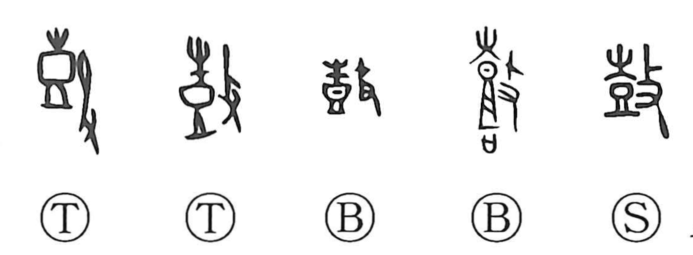

鼓

Kun: tsuzumi | On: ko
drum ・ to beat ・ to rouse
Explanation
This character is a compound that combines the pictograph of a drum with the element for striking, depicting the act of beating a drum. From that image it came to mean both “drum” and “to beat,” not just great drums but the striking of any percussion to bring out sound. Because such sound stirs and heartens people, the word extends to expressions like 鼓舞, “to rouse or encourage,” and 鼓腹, “to live content with a full, satisfied belly.”